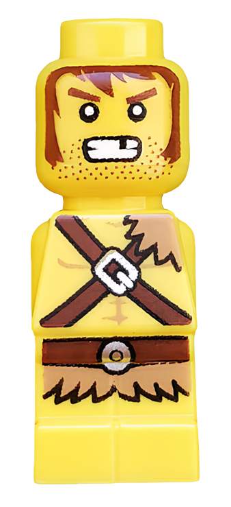

Lore
The Barbarian comes from a settlement in the Barresh Mountains covered in rugged terrain North of Castle Fortaan. He began to travel to other lands, but when he returned, he discovered that his village had been taken over by monsters. Vowing to free his people, he is joined by 7 other heroes on his quest to stop evil.
|  | Weapon: |
|---|